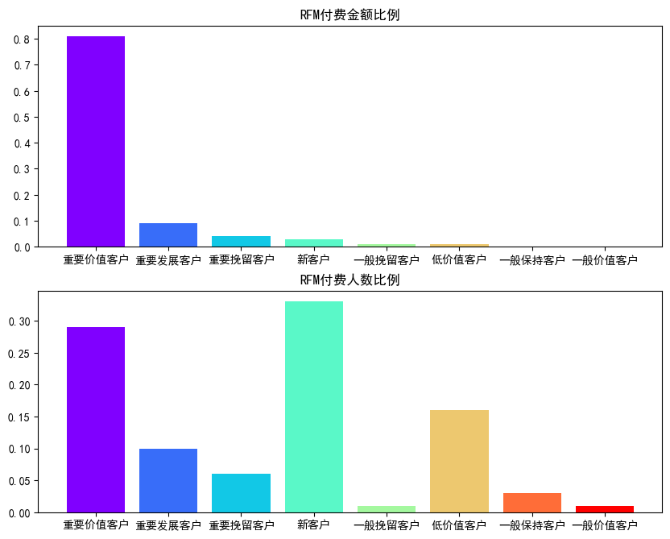

收入分析—RFM模型
RFM模型是基于客户的消费行为，将用户在三个维度上进行分类，为公司营销决策提供依据。RFM模型通过客户的最近付费时间间隔（R，Recency） 、付费总次数（F，Frequency）和付费总金额（M，Monetary）三项指标衡量客户价值。
- R表示距离客户最近一次付费日期有多久，R值越低，客户价值越高；
- F表示客户的购买频率，即一段时间内客户发生交易的次数，F值越高，客户的价值越高；
- M表示客户在公司的消费金额，是一段时间内利润的度量，M值越高，客户的价值越高。
R的计算可以用天数表示，即R = 统计截止日期 - 每个用户最后一次消费的日期，其中可以使用统计期间内所有用户中最后一次交易的时间作为统计的截止日期。
通过这三个指标对客户的价值进行划分：
| 客户类型 | 客户特征 |
|---|---|
| 重要价值客户 | 消费金额大、消费频率高、最近一次消费时间间隔短，优质客户，需要保持 |
| 重要发展客户 | 消费金额大，消费频率低，最近一次消费时间间隔短，深耕客户，需要重点识别 |
| 重要挽留客户 | 消费金额大，消费频率高，但最近无消费，有价值客户，需要挽留 |
| 一般挽留客户 | 消费金额大，消费频率低，最近无消费，潜在的有价值客户，需要挽留 |
| 一般保持客户 | 消费金额小，消费频率高，最近一次消费时间间隔短，潜力客户，需要挖掘 |
| 新客户 | 消费金额小，消费频率低，最近一次消费时间间隔短，新客户，有推广价值 |
| 一般价值客户 | 消费金额小，消费频率高，最近无消费，一般维持客户 |
| 低价值客户 | 消费金额小，消费频率低，最近无消费，低价值客户 |
付费用户RFM模型分析
现有某一款游戏最近一周的付费类数据，其中包括本周最后一次付费日期、付费次数、付费金额等。利用该数据进行付费用户RFM模型分析。
载入分析所需的库
1 | import numpy as np |
导入数据
1 | df = pd.read_csv("用户消费数据.csv") |
| player_id | last_date | pay_cnt | pay_mnt | |
|---|---|---|---|---|
| 0 | 1 | 20161002 | 2 | 48.0 |
| 1 | 2 | 20161002 | 2 | 7.0 |
| 2 | 3 | 20161002 | 1 | 6.0 |
| 3 | 4 | 20160927 | 2 | 31.0 |
| 4 | 5 | 20160928 | 1 | 6.0 |
查看数据结果明细
1 | df.info() |
数据说明：
- player_id表示玩家ID；
- last_date表示最后一次付费日期；
- pay_cnt表示付费次数；
- pay_mnt表示付费金额。
计算用户最近一次付费时间间隔
1 | # 将last_date转换成日期格式 |
查看付费时间间隔（R）、付费次数（F）及付费金额（M）的分位数情况
1 | df[["time_interval", "pay_cnt", "pay_mnt"]].quantile(np.arange(0, 1.1, 0.1)) |
| time_interval | pay_cnt | pay_mnt | |
|---|---|---|---|
| 0.0 | 0.0 | 1.0 | 0.03 |
| 0.1 | 0.0 | 1.0 | 1.00 |
| 0.2 | 0.0 | 1.0 | 1.00 |
| 0.3 | 0.0 | 1.0 | 6.00 |
| 0.4 | 0.0 | 1.0 | 6.00 |
| 0.5 | 0.0 | 1.0 | 6.00 |
| 0.6 | 0.0 | 1.0 | 7.00 |
| 0.7 | 0.0 | 2.0 | 18.00 |
| 0.8 | 1.0 | 2.0 | 30.00 |
| 0.9 | 2.0 | 3.0 | 57.00 |
| 1.0 | 6.0 | 42.0 | 11206.00 |
从分位数的结果来看，付费时间间隔（R）、付费次数（F）及付费金额（M）都存在明显的左偏现象，所以不宜使用平均数的方法选择基准值。根据分位数的结果，R的基准值选择70%分位数0天，F的基准值选择60%分位数的1次，M的基准值选择50%分位数的6元。选定基准值后，可以使用者这三个基准值对用户进行分类。为了便于处理，可以引入3个衍生变量：tagR、tagF、tagM。当值大于基准时，tagR为0，tagF、tagM为1，当值小于等于基准值时，tagR为1，tagF、tagM为0。
1 | df['tagR'] = np.where(df['time_interval'] <= 0, 1, 0) |
根据RFM模型进行分类，给每位用户打上相应的类型标签，统计不同RFM类型的用户人数和付费金额，并绘制柱形图。
1 | # 为所有用户打上标签 |
查看上述的统计数据
| type | usr_cnt | pay_mnt_sum | usr_cnt_rate | pay_mnt_sum_rate | |
|---|---|---|---|---|---|
| 5 | 重要价值客户 | 1098 | 143775.00 | 0.2903 | 0.8124 |
| 6 | 重要发展客户 | 378 | 16717.00 | 0.0999 | 0.0945 |
| 7 | 重要挽留客户 | 231 | 7567.00 | 0.0611 | 0.0428 |
| 4 | 新客户 | 1259 | 4609.00 | 0.3329 | 0.0260 |
| 2 | 一般挽留客户 | 41 | 2072.00 | 0.0108 | 0.0117 |
| 3 | 低价值客户 | 601 | 1876.00 | 0.1589 | 0.0106 |
| 1 | 一般保持客户 | 120 | 243.00 | 0.0317 | 0.0014 |
| 0 | 一般价值客户 | 54 | 106.03 | 0.0143 | 0.0006 |
绘制付费金额统计、付费人数统计柱形图
1 | fig = plt.figure(dpi=100, figsize=(10,8)) |

通过上述图表可以看到:
- 重要价值客户占了全部付费用户人数的29.03%，贡献了81.24%的收入，他们是收入的主要来源，需重点维护。
- 新用户占了全部付费人数的33.29%，但是付费金额只占到2.6%。对于这类用户，可以给他们推荐新的玩法和角色，更进一步激发他们的付费能力。
- 重要发展客户占付费人数的9.99%，付费金额占9.45%；重要挽留客户占付费人数的6.11%，付费金额占4.28%。对于这两类客户来说，他们可能有一定的付费能力，需要进一步挖掘，分析用户的消费行为，制定有针对性的消费策略。
- 对于其他分类用户，他们可能付费能力有限，而更关注一些超值大礼包，因此，做运营活动促销时可以对他们进行推广和刺激，提高整体付费渗透率。
RFM的不足及改进
RFM模型分析虽然简单有效，但也存在一定的不足。
不足
- 用户评分过于简单：评分标准是根据选择的基准值划分用户群，而该基准值的选择容易受到分析者主观经验的影响。
- 用户行为变化无法追踪：RFM模型仅仅是利用统计周期内的数据对指标进行分级，无法体现用户的以前行为，不能发现用户不同时期的状态变化。
- 指标间的相互影响：在统计周期内的消费频率（F）和消费金额（M）两个指标存在共线性问题。
改进
- 用户分群：利用聚类分析对用户进行划分，可以分为超R、大R、中R、小R等。
- 更多维度描述用户：可以增加用户的历史付费总次数、历史付费总金额、周平均付费金额等指标，利用相关性分析查看各变量间的关系。
- 数据降维：利用主成分分析进行降维处理，消除各指标间的线性影响。
- 运营策略支持：运营可以利用用户分群进行精细化运营，甚至可以结合关联推荐、智能推荐系统发现不同用户群的购物习惯，对道具进行捆绑打折销售，或者利用协同过滤的推荐算法对个体玩家进行个性化推荐。